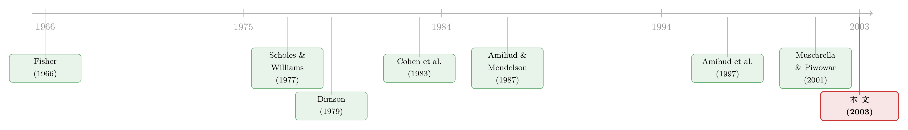

收盘价到底准不准？——一道用「股票们齐不齐心」量出来的市场质量
本文读的是 Pagano & Schwartz (2003, Journal of Financial Economics)：巴黎证券交易所分两次（1996 年给冷门的 B 股、1998 年给活跃的 A 股）在收盘时引入电子集合竞价 (closing call auction)，作者用一个谁都想不到的指标——「一篮子股票的价格变动有多同步」——证明这个小小的制度改动，既降低了个体的交易成本，又让全市场的价格发现 (price discovery) 更准；而且收盘的改善还「溢出」到了次日开盘。
1 一个看似无聊的问题：收盘价准不准？
先抛一个你大概从没认真想过的问题：今天的收盘价，是个「好」价格吗？
听上去几乎是废话。收盘价不就是当天最后一笔成交吗？有什么准不准的。可一旦你站到交易另一端，就会发现这是个要命的问题。衍生品要靠收盘价来结算，基金要靠收盘价来计提净值 (mark-to-market)。如果这个价格是靠当天临门一脚、几笔小单子随手敲出来的，那它就像一张被随便填了个数的支票——所有挂在它后面的合约、估值、保证金，全跟着一起晃。
巴黎证券交易所（Paris Bourse，即如今的 Euronext Paris）当年面对的正是这个麻烦。它的连续交易系统 CAC（Cotation Assistée en Continu）里，收盘价就是最后一笔连续成交，「只要几笔相对很小的订单，就能把收盘价拨来拨去」。衍生品交易员被坑得苦不堪言：想在合适的价位平仓平不掉，想按合理价格盯市也盯不准。于是 1996 年 5 月 13 日，交易所给流动性较差的连续 B 股 (Continuous B stocks) 装上了一个收盘集合竞价；两年后的 1998 年 6 月 2 日，又把同样的东西给了交易更活跃的连续 A 股 (Continuous A stocks)。
所谓集合竞价，和连续交易的差别在于：连续市场里，一笔买价和一笔卖价一旦匹配就成交；而集合竞价是把一段时间内所有的买单卖单攒起来，在某个预定时刻、以单一价格、做一次多边的批量撮合。巴黎的做法是——下午 5:00 连续市场关门，订单簿重新打开收单，建簿（book building）持续五分钟，5:05 设定收盘清算价。期间系统还实时显示「指示性清算价」和指示性成交量，这个能让成交股数最大化的价格，到点就变成真正的执行价。
集合竞价的设计初衷，是把分散在各时点的流动性汇集到一个点上，从而降低单个参与者的交易成本，并锐化全市场价格发现的准确度。它是三大交易机制里——连续订单簿、报价驱动的做市商市场、集合竞价——最不被理解的那一个，尤其在以连续交易为信仰的美国。
2 真正棘手的一步：怎么「干净地」证明它有用？
故事到这儿，问题从「收盘价准不准」变成了一个更刁钻的方法论难题：你怎么证明，是这个集合竞价让市场变好了，而不是别的什么东西？
这才是这篇论文真正下功夫的地方，也是它最漂亮的一招。
首先，最直觉的办法——比买卖价差 (bid-ask spread)——在这里根本用不了。集合竞价按定义就是单一价格成交，价差被消灭了，无从比起。
接着，一个自然的备选是方差比 (variance ratio) 之类的微观结构检验。但作者直言这类指标会给出含糊的结果：它们对收益里的正负自相关模式反应方式不同——动量交易带来正相关、反向交易带来负相关——在长测量区间上，自相关还会以难以解释的方式扭曲方差比统计量（这一点 Campbell, Lo & MacKinlay 1997 早有讨论）。
那么真正关键的一步在于：作者换了一把尺子。他们不去直接测某一只股票的价格有多准，而是去测「一篮子股票的价格变动有多同步」。
这个跳跃的逻辑是这样的。单只股票价格发现的不准确，和股票之间价格调整的不同步，其实是同一枚硬币的两面。如果市场摩擦让一只小盘股对市场信息的反应慢半拍，那么把许多这样的股票放在一起，它们对同一个市场冲击的反应就会显得「参差不齐」、彼此错位。摩擦越大，错位越严重。反过来，如果一个制度改革真的削平了摩擦，那么股票们就会更「齐心」地跟着大盘走。同步性，就成了市场质量的体温计。 这个想法直接承袭自 Cohen, Hawawini, Maier, Schwartz & Whitcomb（1983a, b）那套关于摩擦与系统性风险估计的经典工作。
把它翻成大白话：价格准不准看不见，但「大家齐不齐」看得见。作者赌的就是这两件事是同一件事。
3 同步性怎么测？——两把刻度：beta 与 R²
那同步性具体怎么量？作者用了最家喻户晓的工具——市场模型 (market model) 回归——但用法很巧。
他们盯住两个统计量。
第一把刻度：beta 的「区间效应」。 这里要先讲一个被忽视的老现象。当一只股票对市场指数的反应是滞后的（薄交易的小盘股大多如此），用很短的区间（比如 1 天）去估它的 beta，会被系统性地低估——因为今天的市场信息要到明后天才反映进股价里，短区间「漏」掉了这部分协动。Fisher（1966）、Scholes & Williams（1977）、Dimson（1979）都指出过这种偏误。Schwartz（1991）进一步说：随着测量区间 \(L\) 拉长到无穷，估出来的 beta 会渐近地逼近它的真值。
作者于是对每只股票，用 12 个不同的收益区间（\(L = 1\) 到 \(10\) 天，外加 \(15\) 天和 \(20\) 天）各跑一次市场模型回归，得到 12 个所谓「第一段 (first-pass) beta」。注意这个工程量：12 个区间 × 100 只股票 = 1,200 个回归，横跨事件前后两段。然后再把这 12 个 first-pass beta 拿去跑一个「第二段 (second-pass)」回归，看 beta 是怎样随区间变化、以及这个变化在集合竞价引入之后有没有改变：
这里的 \(\ln(1+L^{-1})\) 跟随 Fung, Schwartz & Whitcomb（1985）——既然 first-pass beta 是渐近逼近真值，它就不可能与 \(L\) 线性相关，但可以是 \(1/L\) 的线性函数，这个变换给出最好的线性拟合。
逻辑链条至此闭合得很优雅：对滞后市场的股票，斜率 \(b_{j,2}\) 应当为负（区间越长 beta 越大，而变换项越小）。若集合竞价削平了摩擦，事件后短区间的 beta 不该再被低估那么多，于是交互项系数 \(c_{j,2}\) 应当为正——但绝对值小于 \(|b_{j,2}|\)，因为制度改革只是缓解而非逆转区间效应。作者把事件前的 \(b_{j,2}\) 叫 BETA2，事件后的 BETA2 则是 \(b_{j,2}+c_{j,2}\)。
第二把刻度：市场模型的 R²。 beta 那把尺子有个软肋——只对「滞后」的股票灵。R² 则不挑：无论一只股票是领先还是滞后市场，短区间的非同步调整都会压低它的市场模型 R²。所以如果市场结构变得更有效率，事件后所有股票在各区间上的 R² 都该上升。作者同样用 \(\ln(1+L^{-1})\) 把它组织成一个池化回归（注意工程量翻倍：12 区间 × 100 股 × 2 期 = 2,400 个回归）：
$$ \text{AdjRsq}_{jLE} = r_j + s_j\,\ln(1+L^{-1}) + t_j\,(\text{DummyRsq}_{jE}) + u_j\,(\text{DummyC}_{jE}) + v_{jLE} $$
其中 \(\text{AdjRsq}_{jLE}\) 是用 \(L\) 天收益、在时期 \(E\)（\(A\) 为事件后、\(B\) 为事件前）估出的调整 R²，\(\text{DummyRsq}_{jE}\) 在事件后等于 \(\ln(1+L^{-1})\)、事件前为零。\(R^2\) 上升，就是同步性增强、价格发现变准的直接证据。
4 那个「天作之合」的实验设计
铺垫到这里，论文最让人拍案的地方才真正登场——它的识别 (identification) 几乎是老天送的。
巴黎交易所分两次、给两组完全不同的股票引入同一个制度：1996 年给 B 股，1998 年给 A 股。这意味着什么？
- 你有两个独立的事件、两个独立的样本（各 50 只，共 100 只）、两个不同的日历时点。任何一组结果，都能在另一组上复制 (replication) 一遍。如果两次都得到一致的结论，你就很难再把它归因于「某段特殊行情」或「某批特殊股票」。
- 更妙的是互为对照。在检验 A 股 1998 年的事件时，可以拿当时制度没变的 B 股作对照样本；检验 B 股 1996 年事件时，反过来拿 A 股作对照。两个对照样本里，价格调整同步性的变化都远不显著——这就把「是不是整个市场恰好在那段时间变好了」这个最大的隐忧给堵死了。
这是一种近乎双重差分 (difference-in-differences, DiD) 的味道：处理组（被装上集合竞价的那一批）有显著变化，对照组（制度没动的那一批）没有。作者还顺手控制了样本整体的收益波动率与成交量在两个实施日附近的变化，确认结论不是被这些 samplewide 的因素带偏的。
这里有个常被误读的反例。Muscarella & Piwowar（2001）发现，巴黎的股票从连续市场被挪到「纯集合竞价」交易后市场质量恶化，反之则改善，他们据此说连续市场更优。但作者一针见血地指出：在巴黎，纯集合竞价是留给最不流动、交易最稀的股票的，「挪去集合竞价」实质上等于被连续市场摘牌。所以那个发现更可能反映的是摘牌/上市本身的冲击，而非交易机制的优劣。本文的设计恰好避开了这个混淆——它比的是「同一批股票、加装一个收盘集合竞价之后」的前后变化。
5 数据与结果：股票们确实更齐心了
数据很干净：样本是 50 只 B 股 + 50 只 A 股，市场组合用 CAC-40 指数代理，收益区间 \(L\in\{1,2,\dots,10,15,20\}\) 共 12 档，分事件前后两段。除了基于收盘价的核心检验，作者还把同一套方法用到了三个别的时点——连续交易的收盘前几分钟、次日开盘、以及隔夜收益——来做交叉验证。
主要结果讲的是同一个故事，而且讲了两遍：
-
收盘处，价格调整更同步了。 市场模型检验清楚地表明，事件后样本内股票的价格调整更加同步；beta 的区间效应被拉平（交互项方向符合预期），R² 系统性抬升。两次独立事件、两组不同股票、beta 与 R² 两把尺子，结论高度一致。
-
改善「溢出」到了开盘。 这是论文最有意思的反转。收盘集合竞价照理只该改善收盘，可作者发现次日开盘的市场质量也变好了，只是幅度小于收盘。他们给出的解释是一个正向的溢出效应 (spillover effect)：机构为控制市场冲击，习惯把大单切成小块、用一整天慢慢喂给市场，结果总有一批没成交的单子「悬」在市场上方 (market overhang)。收盘集合竞价提供了一个集中撮合的窗口，让机构能把这些单子提前拿出来、以极小的冲击成交掉，从而减轻了悬挂订单的压力——这份轻松一路传导到了次日开盘。
-
没有把连续市场「抽干」。 一个合理的担心是：如果大量订单都涌向收盘集合竞价，那临近收盘的连续市场会不会价差变宽、流动性枯竭？事实并没有。巴黎约 95% 的交易始终留在连续市场——这与 Kalay, Wei & Wohl（2002）在特拉维夫发现的「投资者偏好连续交易」一致——但投资者仍能从开盘、收盘这些关键时点上更好的流动性供给与价格发现里集体受益。
需要诚实说明：本文正文在我手头是截断的，上面的结论方向（同步性增强、R² 抬升、开盘溢出）忠实于作者在引言与方法部分的明确表述，但我无法逐一复现表格里 BETA2、\(c_{j,2}\)、R² 变化的具体系数与 t 值——这些请以原文表格为准，我不会替它编一个数字出来。
6 文献脉络
把这篇论文放回它的来路，会看到一条很清晰的演进线。
最早的源头是一组关于「薄交易如何污染 beta」的方法论工作：Fisher（1966）提出新的股价指数并注意到非同步交易问题，Scholes & Williams（1977）和 Dimson（1979）给出了从非同步数据里估 beta 的修正。承上启下的关键是 Cohen, Hawawini, Maier, Schwartz & Whitcomb（1983a, b）——他们把「交易摩擦」与「系统性风险估计偏误」正式联系起来，奠定了用区间效应来推断摩擦的整套框架；Fung, Schwartz & Whitcomb（1985）随后正是用巴黎数据测试了这个区间效应偏误的修正，本文的 \(\ln(1+L^{-1})\) 变换就直接来自这里。

另一条支线是关于交易机制本身的：Amihud & Mendelson（1987）比较了 NYSE 集合竞价开盘与连续收盘的波动率（并提醒人们，开盘波动更大未必说明集合竞价更差，也可能只是开盘时价格发现更难）；Amihud, Mendelson & Lauterbach（1997）用特拉维夫股票从集合竞价批量转入连续交易的设定，分离出了机制变化的价格效应；George & Hwang（2001）则发现 NYSE 集合竞价开盘与连续收盘的收益方差并无显著差异。再加上 Muscarella & Piwowar（2001）那个容易被误读的反例、以及 Kalay, Wei & Wohl（2002）对投资者偏好的刻画——本文恰好坐在这两条线的交汇点：用区间效应/R² 这套「摩擦尺子」，去评估一个真实的集合竞价制度改革。
这条「用价格同步性给市场质量做体检」的思路，和把效率本身当成一个可计时对象来研究的努力是相通的（关于这一点，可参见《市场要多久才「想明白」？——给效率装上一只秒表》）。而集合竞价作为一种古老又陌生的机制，它在别处的样子也很值得对照（参见《教科书里那个「不存在」的市场，其实每天都在东京开门》）。
7 评论与延伸（Q&A + 研究方向）
(a) 几个可能的疑问
Q：用 R² 和 beta 来衡量「市场质量」，会不会只是测出了「股票更像指数成分」而非「价格更准」？
这是核心担心，作者的回答靠的是经济学约束而非纯统计：他们事先论证了短区间 R² 被压低、滞后股 beta 被低估，唯一合理的来源是非同步价格调整，也就是摩擦。如果摩擦下降，R² 就该升、beta 区间效应就该平。再加上对照样本几乎不动，这个解释比「机械地更像指数」更站得住——但它终究是间接证据，不是对单股定价误差的直接测量。
Q：把它和 Muscarella & Piwowar（2001）的「连续市场更优」放一起，岂不矛盾？
不矛盾，关键在「比什么」。后者比的是股票被整体挪进/挪出纯集合竞价（约等于摘牌/上市），混入了流动性筛选效应；本文比的是同一批股票额外加装一个收盘集合竞价的前后变化。两者测的根本不是同一件事。
Q：收盘的改革凭什么能改善开盘？这个「溢出」会不会是巧合？
作者给的机制是订单悬挂 (overhang)：集中撮合让机构把拖了一天的剩单提前清掉，减轻了次日仍悬在市场上的压力。它能被证伪——如果是巧合，对照样本的开盘也该一起变好，但并没有。当然，「幅度小于收盘」也说明这个渠道是间接、被稀释的。
Q：为什么不用更现代的 TAQ 式高频指标，非要绕这么大一圈？
因为集合竞价消灭了价差，价差类指标直接失效；而方差比对正负自相关混合的情形会给出难解释的结果。同步性这把尺子的好处恰恰是「对正负相关都稳健」——作者要的只是「摩擦导致的领先/滞后调整确实存在」这一弱前提。
Q：95% 的交易仍在连续市场，那这个集合竞价是不是其实无关紧要？
量上确实是配角，但价值不在成交占比。它服务的是收盘价的质量——衍生品结算、盯市都挂在这一个价格上；同时它替机构提供了一个低冲击的集中出货窗口。少量但关键的成交，撬动的是整条估值链的可靠性。
Q：结论会不会只是 1996–98 那段特殊行情的产物？
这正是双事件设计要回答的。两个相隔两年、不同股票、不同行情的事件给出一致结论，再叠加波动率与成交量的控制、以及互为对照的安慰剂检验，能很大程度排除「特定时期」的解释。残留的担心是两次事件都发生在欧洲交易所电子化的同一波浪潮里，存在共同的时代趋势。
(b) 几个可能的研究问题与提案
1. 把同样的「同步性尺子」搬到公司债市场的交易机制改革上。 【经济故事】公司债是出了名的不流动、报价稀疏，价格发现极慢，跨债券的价格调整非同步性应当比股票更严重。若某个市场（如引入盘后集合撮合、或 TRACE 式透明度改革）削平了摩擦，债券收益对信用因子/利率因子的同步性就该上升。 【可行性】中。TRACE 逐笔成交数据可得，识别可借用监管分阶段实施（不同评级/规模分批纳入透明度）。难点在于债券交易太稀，构造区间收益与「市场因子」都需要小心；非同步偏误可能强到反而成了优势。
2. 收盘集合竞价对外资持有人的差别影响。 【经济故事】外资常被认为有信息劣势、且交易成本更敏感。一个集中、低冲击的收盘窗口，可能对外资的执行成本改善更大，也可能因其信息劣势在批量撮合里更吃亏。方向不明，正适合实证。 【可行性】中偏低。需要带投资者国籍标签的成交簿数据（如韩国、台湾交易所那类），且要能对齐到集合竞价的引入事件。数据是主要瓶颈。
3. 集合竞价与衍生品结算操纵的因果检验。 【经济故事】巴黎引入收盘集合竞价的原始动机，就是「几笔小单能拨动收盘价、坑害衍生品」。那么改革之后，期权/期货到期日附近的收盘价异常波动是否真的下降了？ 【可行性】高。到期日是清晰的事件窗口，可做到期日 vs. 非到期日的 DiD；收盘集合竞价引入提供第二重处理。数据（指数期权到期、收盘价）公开可得，识别干净。
4. 「订单悬挂」机制的直接验证。 【经济故事】开盘溢出的解释靠的是机构剩单被集合竞价提前清掉。如果能拿到带机构标识的订单流，就能直接看：收盘集合竞价引入后，次日开盘的机构「隔夜悬挂单」是否真的减少了。 【可行性】低。需要交易所层面的订单簿微观数据且能区分机构，可得性极差；但一旦拿到，是对该机制最干净的验证。
5. 流动性供给的「时点再分配」效应。 【经济故事】把流动性汇集到收盘一点，会不会只是把临近收盘那几分钟连续市场的流动性「搬走」了？本文说没有抽干，但没细究日内流动性的时点重分布。 【可行性】高。用日内分钟级价差/深度数据，对比引入前后收盘前 30 分钟的流动性曲线形状即可，事件研究框架现成。
8 我的判断与参考文献
贡献。 这篇论文最大的价值不在结论（「集合竞价改善了市场质量」并不算惊人），而在方法与实验的双重精巧：一是把「价格准不准」这个不可观测的东西，翻译成「股票们齐不齐心」这个可观测、且对正负自相关都稳健的同步性指标，绕开了价差失效、方差比含糊的双重困境；二是巴黎那个分两次、两组股票、互为对照的天然设计，让一个本来极难做的「其他条件不变」评估，变得近乎干净。开盘溢出效应则是意外之喜，把一个局部改革的价值放大成了系统性的。
对识别的担忧。 我有两点保留。其一，同步性终究是间接指标——R² 上升一定来自摩擦下降吗？指数成分调整、行业集中度变化、甚至样本期内成分股波动结构的改变，原则上都能动 R²，作者用对照样本压制了大部分，但没有完全排尽。其二，两次事件虽相隔两年，却都落在欧洲交易所电子化、自动化的同一股浪潮里，存在难以剔除的共同时代趋势；对照样本能挡住「市场整体变好」，却挡不住「集合竞价之外的、专门作用于被处理股票的同期改革」。
后续想看到的。 我最想看的是把这套尺子接到结算/到期日上做的因果检验（上面提案 3）——既能直接呼应改革的初衷，又有最干净的事件窗口；其次是把它移植到公司债这类摩擦更重的市场，看「同步性」这把在股票上磨出来的刻度，能不能量出信用市场里更粗粝的价格发现。
参考文献
- Amihud, Y., Mendelson, H. (1987). Trading mechanisms and stock returns: an empirical investigation. Journal of Finance 42, 533–555.
- Amihud, Y., Mendelson, H., Lauterbach, B. (1997). Market microstructure and securities values: evidence from the Tel Aviv Stock Exchange. Journal of Financial Economics 45, 365–390.
- Campbell, J.Y., Lo, A.W., MacKinlay, A.C. (1997). The Econometrics of Financial Markets. Princeton University Press, 48–80.
- Cohen, K.J., Hawawini, G.A., Maier, S.F., Schwartz, R.A., Whitcomb, D.K. (1983a). Friction in the trading process and the estimation of systematic risk. Journal of Financial Economics 12, 264–278.
- Cohen, K.J., Hawawini, G.A., Maier, S.F., Schwartz, R.A., Whitcomb, D.K. (1983b). Estimating and adjusting for the intervalling-effect bias in beta. Management Science 29, 135–148.
- Dimson, E. (1979). Risk measurement when shares are subject to infrequent trading. Journal of Financial Economics 7, 197–226.
- Fisher, L. (1966). Some new stock-market indexes. Journal of Business 39, 191–225.
- Fung, W.K.H., Schwartz, R.A., Whitcomb, D.K. (1985). Adjusting for the intervalling effect bias in beta: a test using Paris Bourse data. Journal of Banking and Finance 9, 443–460.
- George, T.J., Hwang, C.-Y. (2001). Information flow and pricing errors: a unified approach to estimation and testing. Review of Financial Studies 14, 979–1020.
- Kalay, A., Wei, L., Wohl, A. (2002). Continuous trading or call auctions: revealed preference of investors at the Tel Aviv Stock Exchange. Journal of Finance 57, 523–542.
- Muscarella, C.J., Piwowar, M.S. (2001). Market microstructure and securities values: evidence from the Paris Bourse. Journal of Financial Markets 4, 209–229.
- Pagano, M.S., Schwartz, R.A. (2003). A closing call's impact on market quality at Euronext Paris. Journal of Financial Economics 68(3), 439–484.
- Scholes, M., Williams, J. (1977). Estimating betas from nonsynchronous data. Journal of Financial Economics 5, 309–328.
- Schwartz, R.A. (1991). Reshaping the Equity Markets: A Guide for the 1990s. HarperBusiness, 423–425.